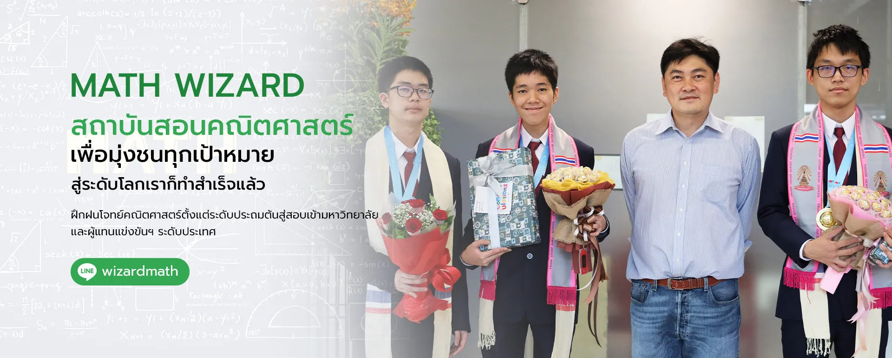
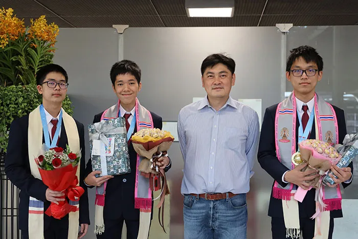
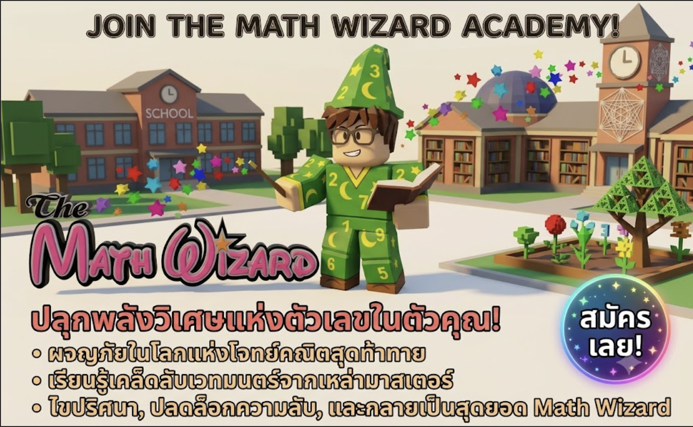

หมู่บ้านเวทคณิต: เรียนผ่านการเล่น
ช่วยลูกค้าในหมู่บ้านด้วยการนับและแบ่งลูกแก้ว ตวงเศษส่วน และร่ายเวทจากตัวเลข รูปทรง และตัวแปร ผ่านภารกิจเพื่อปลดล็อกด่านและฟื้นฟูหมู่บ้าน ลองใหม่ได้โดยไม่จับเวลา
เข้าสู่หมู่บ้านเวทคณิต →กำลังใช้สีเขียว
ฝึกบวก ลบ คูณ หาร และเศษส่วน
ทดลองคณิตศาสตร์ เขียนตามเส้นประ และผจญภัย
เล่นฟรีบนเว็บ ไม่ต้องสมัคร ไม่ต้องโหลดแอป
เขียน/ลากเส้นเป็นขั้นหลัก · แป้นตัวเลขใช้ยืนยันเลขที่เขียน
ผ่านด่านเพื่อปลดล็อกบทใหม่ สำรวจหอคอย 100 ชั้น และไปถึงบทปราบจอมมาร
ป.1 · 10 บท · 1435 ด่าน · บันทึกจุดพัก · TOP 10 บนเครื่อง
รอบละ 5 ข้อ · ไม่จับเวลา · ดูวิธีคิดและลองใหม่ได้
ชุดฝึกหัวข้อที่คัดสรรตามชั้น ป.1–ป.6
เลือกระดับชั้นด้านบน · เล่นรอบละ 5 ด่าน · แตะ เลือก เรียง และจับคู่ · ลองใหม่ได้
ฟังเรื่อง จัดแสง และเรียนวิธีทำสิบ
เริ่มภารกิจทำสิบใหม่จะเปลี่ยนความคืบหน้าเดิมบนเครื่องนี้ ต้องการเริ่มใหม่ไหม?
Math Wizard Quest โดย Math Wizard by DR.Suwan รวมกิจกรรมฝึกคิดและฝึกเขียนสำหรับเด็กประถม เลือกชั้นและหัวข้อที่อยากลอง เล่นได้ฟรีทั้งภาษาไทยและอังกฤษโดยไม่ต้องสมัครบัญชี
ช่วยลูกค้าในหมู่บ้านด้วยการนับและแบ่งลูกแก้ว ตวงเศษส่วน และร่ายเวทจากตัวเลข รูปทรง และตัวแปร ผ่านภารกิจเพื่อปลดล็อกด่านและฟื้นฟูหมู่บ้าน ลองใหม่ได้โดยไม่จับเวลา
เข้าสู่หมู่บ้านเวทคณิต →สำรวจการบวก ลบ คูณ หาร เศษส่วน ร้อยละ และมาตราส่วนในห้องทดลอง 7 ห้อง ปรับจำนวนแล้วดูภาพและสมการเปลี่ยนตาม พร้อมภารกิจ 21 ข้อและคำใบ้ให้ลองคิดต่อ
เปิดห้องทดลองคณิตศาสตร์ →ลากตามรอยทั้งตัวเลขและเครื่องหมายในตารางบวก ลบ คูณ และหาร เลือกแม่ตาราง 1–12 หรือฝึกเศษส่วนที่มีตัวส่วน 2–12 พร้อมภาพแบ่งส่วนเท่า ๆ กัน ใช้นิ้ว ปากกา หรือเมาส์เขียนได้
เปิดสมุดเขียนตารางคณิต →เลือกฝึกโจทย์ตามหัวข้อและชั้น ป.1–6 เล่นมินิเกม 10 แบบ หรือสำรวจโลกผจญภัย 8 บท มีคำใบ้และลองใหม่ได้ แบบฝึกเป็นหัวข้อที่คัดเลือกให้ฝึกเพิ่มเติมตามความพร้อมของเด็ก
เลือกโจทย์และเกมคณิตศาสตร์ →


ต่อยอดความสนุกกับตัวเลข สู่การเรียนรู้ที่เข้าใจ
รู้จักสถาบันสอนคณิตศาสตร์ Math Wizard และพูดคุยเรื่องแนวทางเรียนของลูกผ่านช่องทางติดต่อของสถาบัน
LINE · wizardmath
โทร. 081 852 4904
สอบถามรายละเอียดการเรียน แนวทางเรียนของลูก และการเดินทาง เลือกช่องทางที่สะดวกได้เลย
ก่อนติดต่อ เตรียมระดับชั้นของลูกและหัวข้อที่อยากสอบถาม เพื่อให้พูดคุยรายละเอียดได้สะดวกขึ้น
ไม่มีหมดเวลา · ไม่มีคำใบ้ก่อนตอบ · คำตอบแรกครั้งเดียวต่อข้อ
คิดสำเร็จได้ดาว ลองใหม่หรือใช้คำใบ้ก็ได้ · เดินครบ 5 จุดรับตราจบรอบ